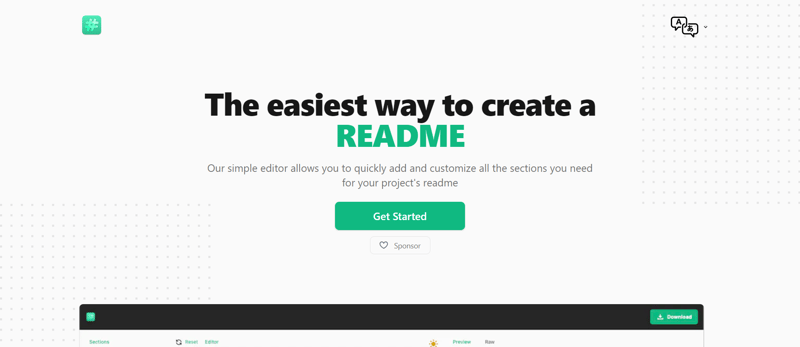

- Ray.so
Ray.so 是一个新网站，它提供了一种快速简便的方法来创建漂亮的代码片段，用于文档或共享目的。 它允许您使用可自定义的主题和背景生成令人惊叹的代码视觉效果，非常适合展示您的工作。

- Roadmap.sh
Roadmap.sh 为软件开发和 Web 开发中的各种职业道路提供全面的技术路线图。无论您是初学者还是想要扩展技能的经验丰富的开发人员，Roadmap.sh 都会提供详细的指南来帮助您驾驭学习之旅。

- CodePen.io
CodePen 是一款在线代码编辑器和社交开发环境，允许开发人员编写 HTML、CSS 和 JavaScript 代码并实时查看实时结果。 这是一个非常好的平台，可用于尝试新想法、分享您的创作并向其他开发人员学习。

- Stack Overflow
Stack Overflow 是一个广泛使用的问答网站，面向程序员和开发人员。它是一个社区驱动的平台，个人可以在此提出与编程、软件开发和各种技术相关的问题。凭借庞大的解决方案库和积极的社区参与，它是解决问题和知识共享的宝贵资源。

- Readme.so
Readme.so 是一个平台，可帮助开发人员为其 API、SDK、库或其他软件产品创建美观、交互性强且用户友好的文档。 它提供了一个简单、直观的界面，用于制作专业文档，从而提升用户体验。
- GitBook
GitBook 是一个允许个人和团队创建和发布在线文档、电子书和知识库的平台。 借助 GitBook，您可以协作编写和维护高质量的文档，使其成为开源项目和内部知识共享的绝佳工具。